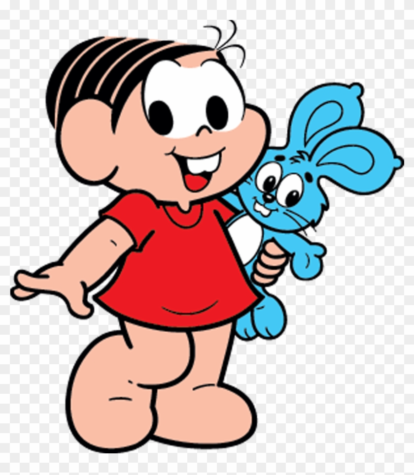
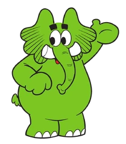

1. Mônica é Inspirada em Alguém Real
Mônica é baseada na própria filha do Maurício de Sousa. O gênio forte e o coelhinho Sansão existem até hoje na vida real!

2. O Cebolinha Troca o R pelo L Por um Motivo
Maurício tinha um amigo de infância que realmente tinha dislalia (dificuldade para pronunciar o “R”).

3. A Magali Come MUITO Mesmo!
A personagem também foi inspirada na filha de Maurício, que adorava comer e tinha um apetite enorme.

4. O Cascão Tem Medo de Água…
…mas já apareceu molhado algumas vezes em edições especiais ou universos alternativos!

5. Bidu Foi o Primeiro Personagem
Bidu e Franjinha são os personagens originais de Maurício, antes mesmo da turma atual existir.

6. Jotalhão Já Foi Mascote de Marca
Nos anos 90, o elefante verde apareceu em comerciais e embalagens de produtos alimentícios.